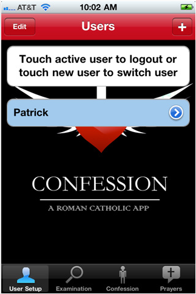

iConfess
2011-02-13
When I heard that the Roman Catholic Church had released a Confession app for iOS, I was shocked. When I heard it cost $1.99, I was stunned. I thought the former idea was conceivable, and maybe even inevitable. The latter, though, struck me as impossible. But I searched the app store, and sure enough: $1.99
I don't know whether making the impossible possible counts as a miracle for Reverend Monsignor Michael Heintz, PhD, or if my initial belief that it was impossible just reflects a lack of faith on my part.
The price, while low, does bring back memories, though, and makes me wonder what the church is thinking. I mean, times are tough for non-profits everywhere, but surely the Vatican isn't going to balance their books $1.99 at a time. Are they?
I like that it is available for the iPad as well as the iPhone...that seems to make it more accommodating to a broader range of sinners. For those with a short list, who visit the confessional often - the iPhone/iPod Touch version will suffice. For others, who lead a more active life of sin, or are just too busy to get to the booth every day - the iPad seems perfect. And, let's face it, if you have an iPad, you probably need the extra screen space that your iDevice affords.
{kind=link}
I don't know whether making the impossible possible counts as a miracle for Reverend Monsignor Michael Heintz, PhD, or if my initial belief that it was impossible just reflects a lack of faith on my part.
The price, while low, does bring back memories, though, and makes me wonder what the church is thinking. I mean, times are tough for non-profits everywhere, but surely the Vatican isn't going to balance their books $1.99 at a time. Are they?
I like that it is available for the iPad as well as the iPhone...that seems to make it more accommodating to a broader range of sinners. For those with a short list, who visit the confessional often - the iPhone/iPod Touch version will suffice. For others, who lead a more active life of sin, or are just too busy to get to the booth every day - the iPad seems perfect. And, let's face it, if you have an iPad, you probably need the extra screen space that your iDevice affords.
{kind=link}

I wondered what the description meant by "Rated 9+ for the following: Infrequent/Mild Mature/Suggestive Themes." The full description indicates that the app offers a "personalized examination of conscience for each user," so I guess the examination gets pretty specific. And, apparently, in the unlikely event that you can't think of anything to examine, the app will "suggest" mild or mature themes for the confessor to reflect upon. Sort of priming the pump.I won't be the first to point this out, but surely the Monsignor could have come up with a better way to word the startup screen. I mean, it's like he's trying to pre-populate your list for you. "Let's see...Ooops! Item #1: Touching an active or new user before going into the confessional." Or maybe that's one of the "suggestive" components of the app.
If any of my Catholic friends have availed themselves of this app, I'd love to hear from you - hit the e-mail link on the right. Has this thing enhanced your confessional experience? If so, how? If not, why not. I know I sound like a smart-ass but I'd genuinely love to know.
Labels: Apple